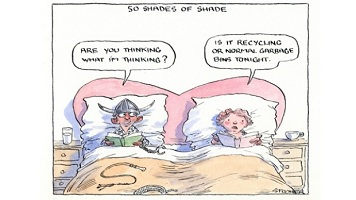

Fifty Shades of Grey: a preparation for domestic violence
February 18, 2015 - 12:00AM
Patricia Edgar
Is this movie part of a propaganda package about submissive women and domestic violence?

Illustration: John Spooner
"Lose Control" is the banner advert across Australia for the film Fifty Shades of Grey. Directed at women, it means be submissive to men.
As I watched the film I thought of a wet night in Sydney. I piled into the back seat of a taxi, my husband leapt into the front beside the driver. "You don't like your wife?" the driver asked, then poured out the sorry tale of his wife, whom he has imprisoned because he found a photo of a man in her wallet. He and his son held a "trial" and she is under house arrest for life. The son stays guard when Dad drives.
Why does such fantasy appeal? Have we got inbuilt instincts from Neanderthal times when women were dragged around by the hair and clubbed?
That unfortunate woman has certainly lost control. Her story is an example from a subculture in which women belong to men.
The epidemic of domestic violence is a symptom of this culture. I thought we had gone a long way beyond such behaviour but Fifty Shades is a harbinger promoting the role of women as "submissives".
Touted as a "date film", its release was timed for the Valentine's Day weekend.
Most of us know the slight story of a kinky young billionaire, Christian Grey, a seductive monster driven by perverted impulses. He likes to torture his women in the belief that he gives them pleasure.
A symbol of capitalist success and power, he is good-looking and muscular. He can fly planes and helicopters and play the piano. He can be charming. His target, Anastasia Steele, is young, a virgin, unemployed, with no income, sharing a flat with a friend. How could she resist such a man who has it all?
There's only one problem: he's a sadist. But, he assures her, she will love his "play room".
The film is a cultural marker. Millions have read the poorly written trilogy and now this blockbuster is set up to promote, brazenly, sequels that will find a massive audience.
Why does such fantasy appeal? Have we got inbuilt instincts from Neanderthal times when women were dragged around by the hair and clubbed? Or is that image part of a propaganda package that seems to be reviving and spreading through our culture in insidious ways?
The trilogy plays on the age-old fantasies women indulge about men. When I was a teenager in the 1950s, magazines like True Confessions were the vehicle. They assured me, "Someday he'd come along, the man I love, and he'd be big and strong, the man I love". My favourite film star was Betty Grable, and I thought good legs would carry me far. Cultural artifacts told my generation repeatedly that when you married you lived happily ever after.
Women were encouraged to be submissive, to please the breadwinner, the dominant male. Don't upset him. He owned you under a contract called marriage. His happiness meant your happiness. Now, while we have learnt life's journey does not unfold like that, and the rise of feminism blew apart the legitimacy of male domination, how far have we really come? Sex for procreation has become sex for recreation and that takes many forms.
Back to another taxi ride, in which I heard a radio report that police had to rescue a woman spread-eagled on a bed tied to bed posts. Her unconscious partner, dressed in a batman costume, had leapt off the wardrobe and hit his head. Is it anybody else's business what happens in our bedroom? Is Fifty Shades just harmless fun? Is it exciting to let your partner tie you up and spank you? Do you go on a date, rush home to jump into "the play room" to be whipped? Is this the modern way to have sex?
If such "play" means sexual freedom, where do you go from here? What happens a year from now in such a relationship? There is no reciprocation. She doesn't tie him up and belt his backside. He dominates, she is submissive. She upsets him by breaking his rules, she is punished.
It seems to me Fifty Shades of Grey suggests a classic preparation for domestic violence. Ask any couple who has an enduring partnership and they will tell you it is impossible to have a successful relationship if one dominates another. I suspect the author, E. L. James, would claim it is ultimately a story about taming the beast – another age-old fantasy.
The cover story in the current Stanford University alumni magazine asks "Can sexual assault be stopped?" It says 55 US colleges in 26 states are being investigated for reported acts of sexual violence. The story cites a 2014 survey from the the University of Oregon that reported "35 per cent of females and 14 per cent of male participants had had at least one sexual experience without their consent and that 10 per cent of female and 0.3 per cent of male participants had been raped".
This is not the military; these colleges are elite institutions. US college campuses are acknowledging that stopping sexual assault is a national imperative.
What needs to be understood by both parties in a sexual act is that a lack of protest or resistance does not mean consent. Consent to one act does not mean consent to another. The existence of a dating relationship does not mean consent. An affirmative act or statement by each person that is informed, freely and mutually given constitutes consent.
In Fifty Shades, Grey is well aware of the need for a signed contract, but he has no concern that he is taking advantage of a position of influence over another, which can be a factor in determining consent.
While ensuring Steele will be dependent, financially and emotionally, under his authority and surveillance, he is grooming her for submission. This is the same pattern as domestic violence – hurt, apologise, be nice, beg her not to leave, then repeat the harm.
Don't be misled by Steele's exit at the end of the film. She comes back for more. This movie is the warm-up. Cosmetics advertising before the film says, "Prepare for your Mr Grey". Just think about it; this film is a dog-whistle for the age-old male con.
Patricia Edgar is a sociologist.